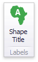

Labels
Geo Point maps provide the capability to display titles within map shapes and allows you to add supplementary content to the callout/bubble/pie tooltips.
Shape Titles
To manage map titles, click the Shape Title button in the Design ribbon tab.

This invokes the Shape Title Settings dialog.

In this dialog, you can specify attributes whose values will be displayed within shapes. Use the  button to preview the available attributes and their values for the current map.
button to preview the available attributes and their values for the current map.
The Title attribute option allows you to select the attribute whose values are displayed within corresponding map shapes.

Tooltips
Geo Point maps also allow you to add supplementary content to the callout/bubble/pie tooltips using the TOOLTIP DATA ITEMS area. To learn more, see the Tooltip Data Items paragraph in the Providing Data topic.